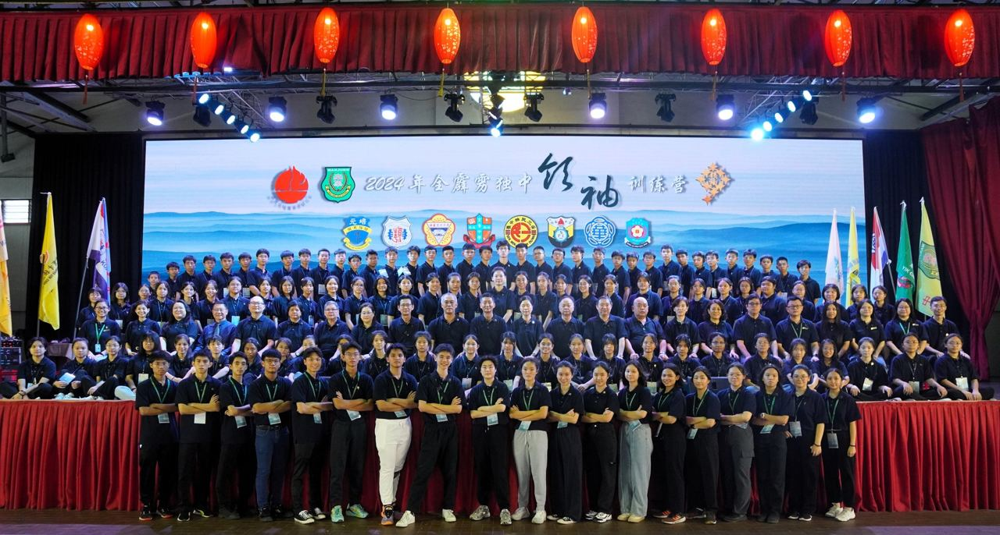
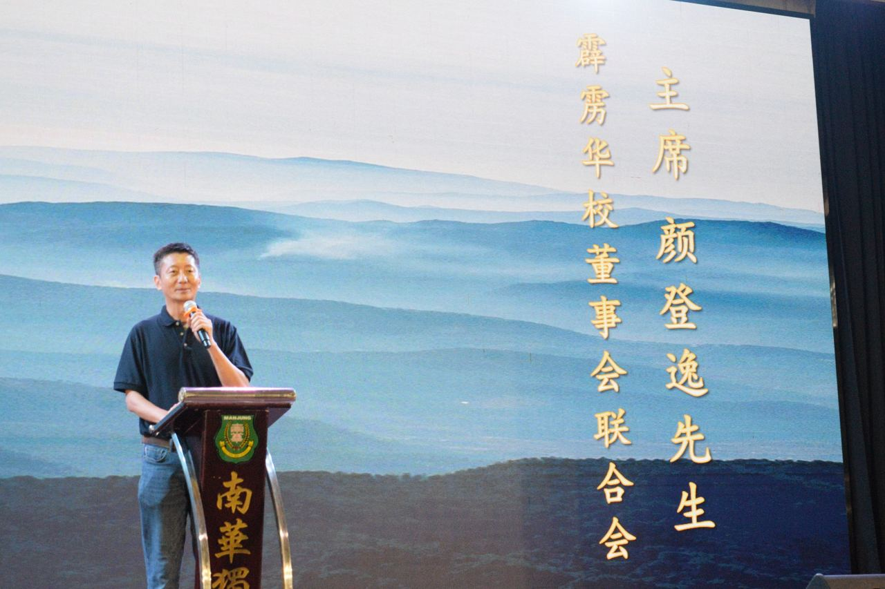
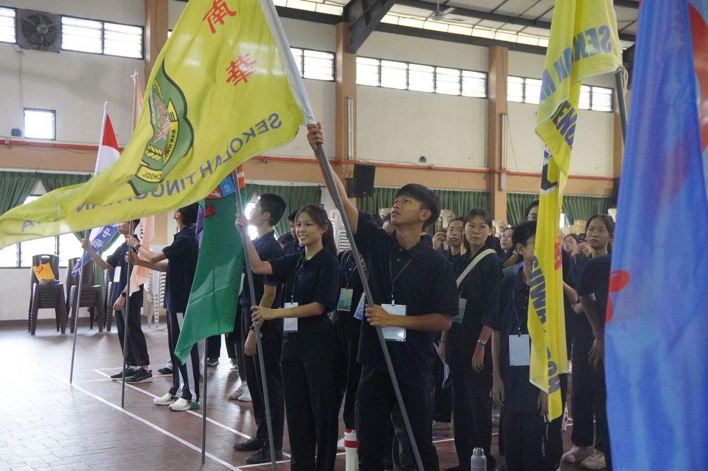
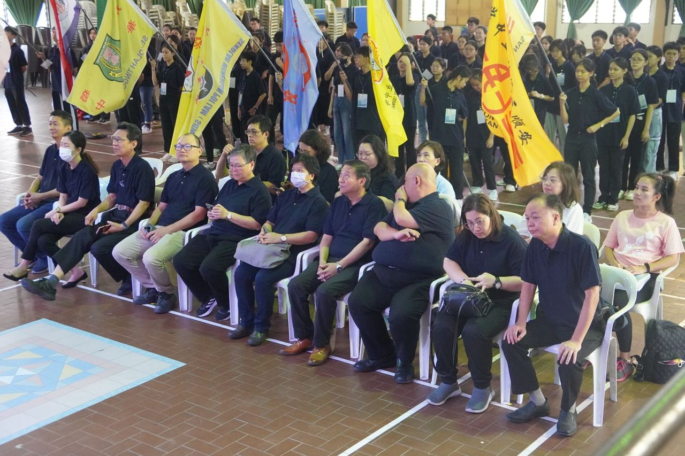
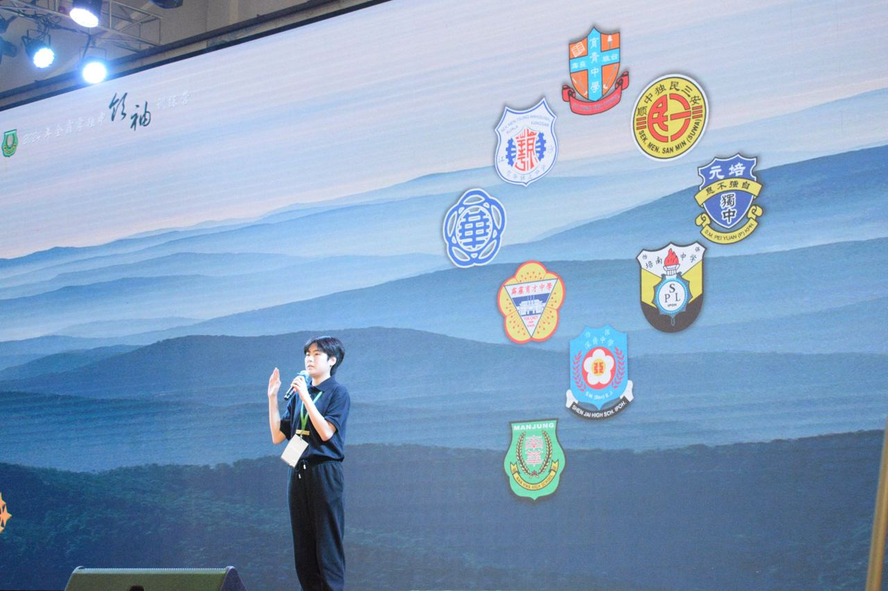
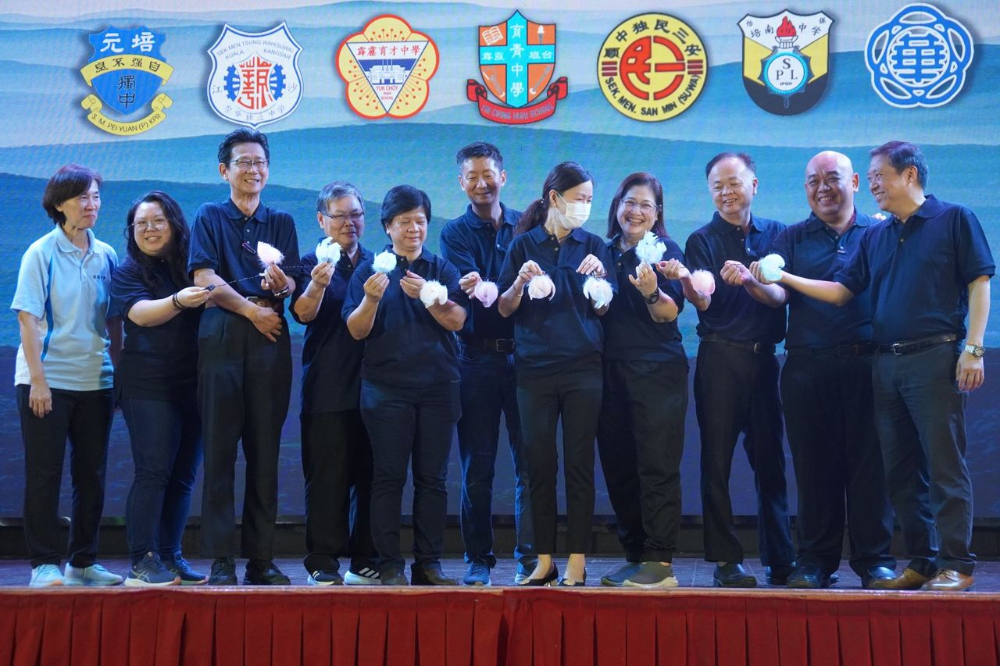
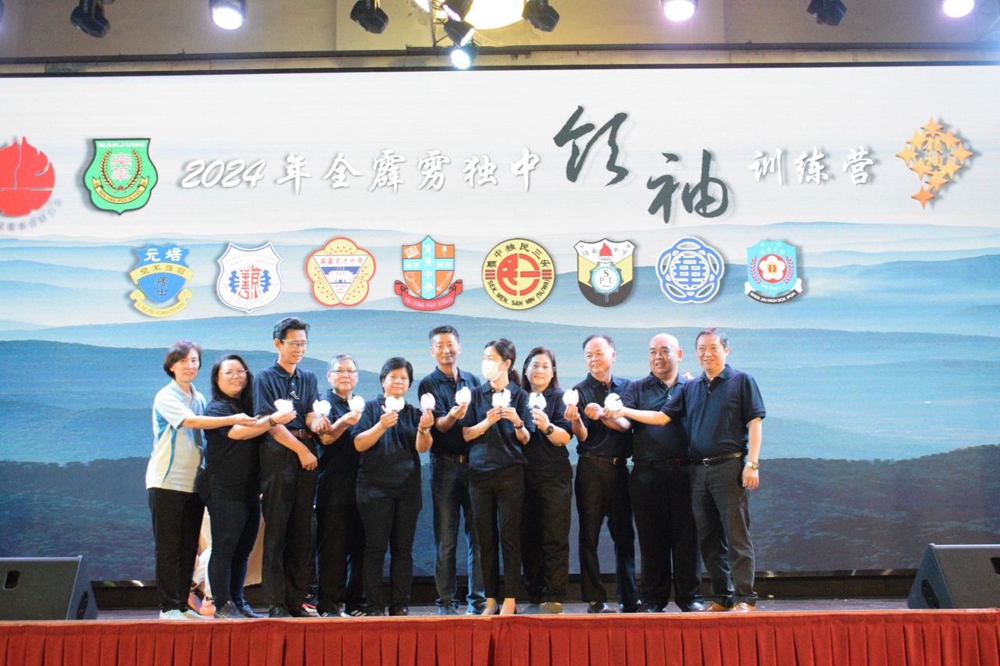
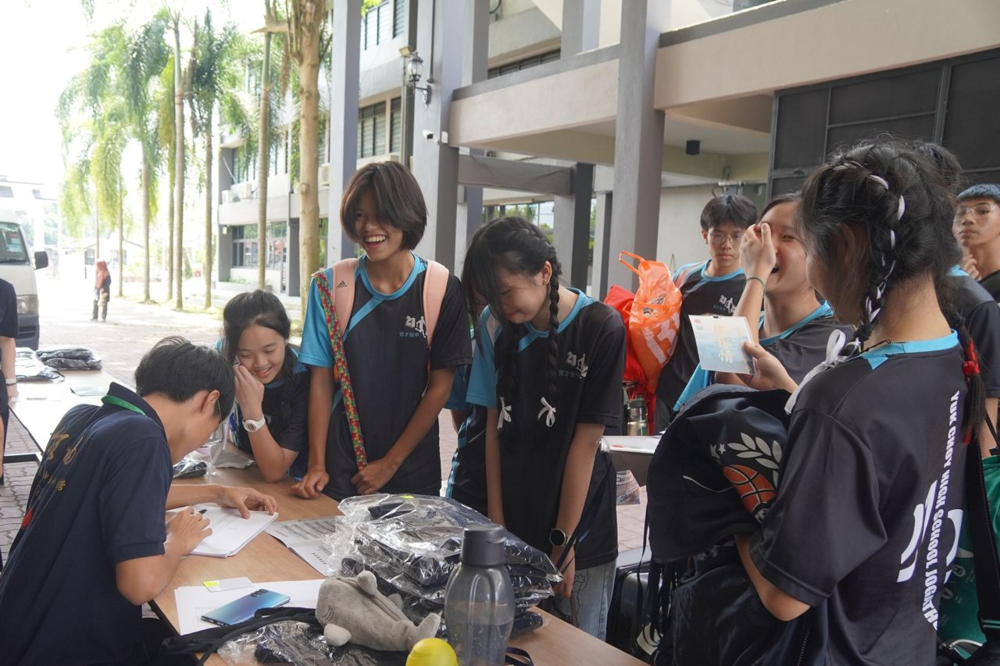

2024全霹雳独中学生领袖训练营
2024全霹雳独中学生领袖训练营
培育未来领袖 传承华教精神
由霹雳董联会主催，南华独中主办的2024年全霹雳独中学生领袖训练营于日前圆满落下帷幕。本届训练营供吸引了来自霹雳九所独立中学以及关丹中华中学的97位优秀学生参加，旨在培养新一代未来领袖，传承华文教育精神。
训练营期间，学员们密集参与理论与实践兼施、趣味与引人深思的系列活动，其中包括的主题有领袖精神与格局、组织能力、才德兼备等领导力培训不但培养学员卓越领带才能，更是进一步开拓学员宏观格局思维与塑造学员高尚品德素养。其他如领袖所需要具备的才能如口才训练、会议规范、制定愿景与使命、面对困境与突破自我等活动则是从各个面向增强团队组织能力，为学员巩固成为未来领袖的基础。
在开幕仪式上，霹雳董联会主席颜登逸先生致辞中回顾了学生领袖训练营自1987年创办以来的历程，强调了这项活动在培养华社未来领袖方面的重要性。颜主席表示："希望透过举办全霹雳独中学生领袖训练营，能够培养出更多具有高格局与远见卓识、德才兼具的优秀领袖，不仅能够寄予传承华教精神的厚望，更希望能为华社的发展注入新的活力。"
闭幕仪式上，霹雳董联会总务黄志伟先生宣布了两项重要决定，为未来的领袖培养工作开辟了新的方向。首先，黄先生宣布成立"全霹雳学生领袖联盟"，旨在为历届训练营学员提供一个持续交流和成长的平台。其次，他宣布将合办第一届全霹雳中学华文学会干部训练营，进一步凝聚全霹雳国中与华中的学生，扩大领袖培养的范围和影响力。
仪式最后，本届承办学校曼绒南华独立中学将全霹雳独中学生领袖训练营的营旗移交给下一届筹办学校——怡保深斋中学，象征着薪火相传，华教精神代代相继。







